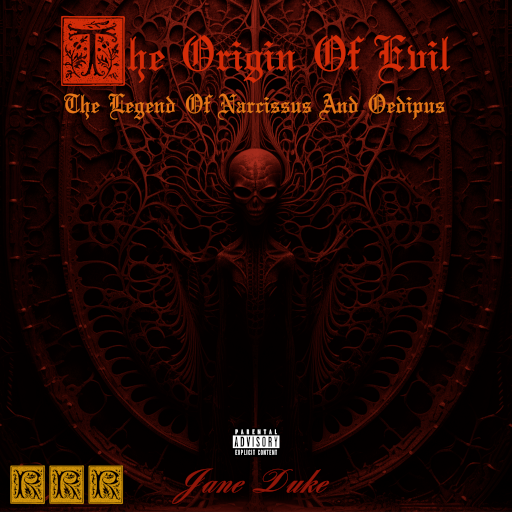
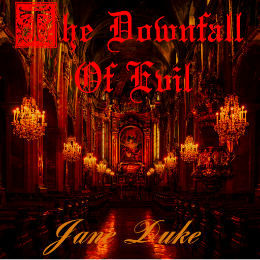

About Jane Duke
Jane Duke is a Romantic composer of this century, and the founder of Revolutionary Romantic Records. Her music embodies a bold and radical vision: a return to the emotional intensity and dramatic power of classical Romanticism, and structure, counterpoint and architecture or Baroque and Renaissnace music. Fused with modern compositional and production techniques.
Her work seeks to awaken strong emotions in the listener, going from joy, to fear, despair, anger, and hope. Jane Duke has been playing music for more than 21 years, and composing since more than 3 years. Before she became a classical musician, she was a metalhead, that is where the dark harmonies and dissonances of her music come from. She studied classical guitar in college, then she began composing long after her college studies.
Discography

The Origin Of Evil
The Legend Of Narcissus And Oedipus
Founding Release • Jane Duke
Instrumental Grand Opera Without Words

The Downfall Of Evil
Second Album Released • Jane Duke
Music Made for Symphonic Orchestra